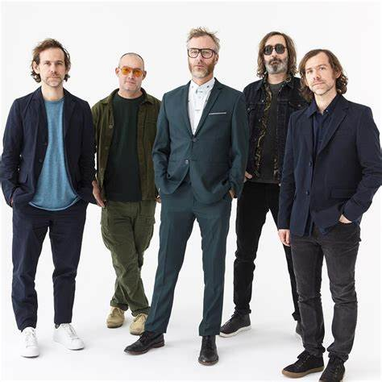
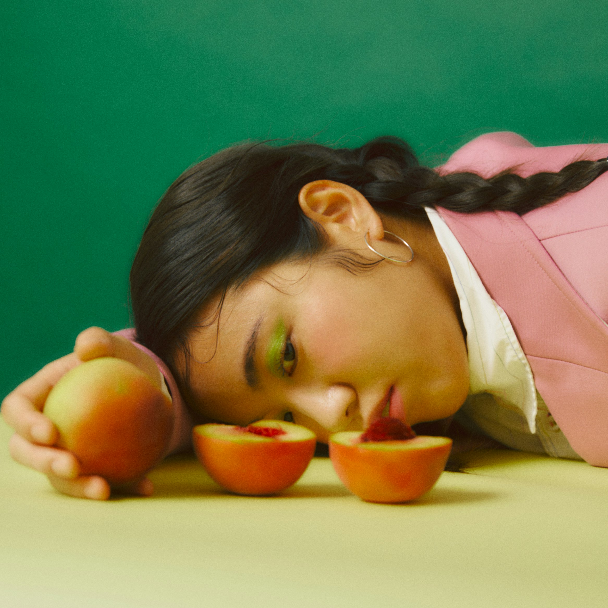

Our Members' Artist Recommendations
Henry's Recommendation - Hazel English

A dream pop musician based in California, Hazel English's honest and wistful lyrics are easily relatable for the listener and the 60s pyschedelic influences evoke feelings of a long gone era many never experienced. Pure escapism in a bottle.
Jenny's Recommendation - Emmy the Great

Originally an anti-folk artist in London in the 2000s, Emmy the Great's sound has grown and evolved constantly over the years. Humourously morbid lyrics to hard hitting truths make Emmy a versatile artist who has explored different genres, sounds and languages; but always with a voice to delight any listener.
Haydn's Recommendation - The National
Stalwarts of indie rock, The National have gone from strength to strength over the course of their career. Unique sounds and profoundly poetic lyrics make The National the perfect band to listen and reflect to.
Melina's Recommendation - Day Wave

Synth-infused atmospheres and dreamy guitar hooks make one man band Day Wave a lush listening choice whatever the ocassion. A lo-fi sense of melancholy in one song can instantly but naturally be juxtaposed by the sonic upbeat chords of another.
Kenneth's Recommendation - mui zyu
Those who appreciate the idiosyncracies and quirks that can be found in the indie genre will find a lot to love in mui zyu. Traditional Chinese instruments blended with cosmic-like distortion and the voice of mui zyu herself creates an unsettilingly sickly sweet listening experience like no other.